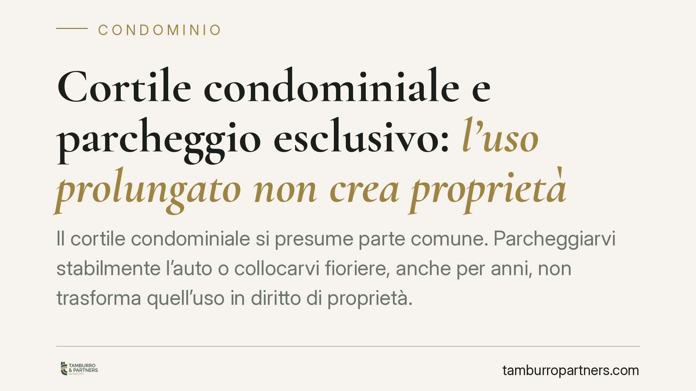

Cortile condominiale e parcheggio esclusivo: l'uso prolungato non crea proprietà
Il cortile condominiale si presume parte comune. Parcheggiarvi stabilmente l'auto o collocarvi fioriere, anche per anni, non trasforma quell'uso in diritto di proprietà. Lo ricorda una recente pronuncia di merito che ha ordinato la liberazione dell'area occupata da alcuni proprietari di negozi al piano terra. Una distinzione pratica che interessa amministratori, condòmini e titolari di attività commerciali.

Il caso
Alcuni proprietari di negozi al piano terra avevano utilizzato per lungo tempo una porzione del cortile condominiale come area di parcheggio riservata, delimitandola con fioriere e altri elementi. Il condominio ha agito in giudizio per ottenere la liberazione dello spazio. Il Tribunale di Salerno ha accolto la domanda, ribadendo un principio consolidato: l'uso prolungato di una parte comune non equivale all'acquisto della sua proprietà.
*Nota sugli estremi: in sede di pubblicazione è opportuno verificare numero, sezione e data di deposito della sentenza prima di citarla puntualmente.*
Inquadramento normativo
L'articolo 1117 del Codice civile elenca le parti che si presumono comuni a tutti i condòmini, salvo che il contrario risulti dal titolo. Tra queste rientrano espressamente i cortili. La presunzione è relativa: può essere superata solo da un titolo di acquisto che attribuisca la proprietà esclusiva di quella porzione a un singolo condomino. In assenza di un simile titolo, il cortile resta comune.
L'articolo 1102 c.c. consente a ciascun condomino di servirsi della cosa comune, purché non ne alteri la destinazione e non impedisca agli altri di farne pari uso. È qui che si colloca la distinzione decisiva: parcheggiare nel cortile può rientrare nell'uso lecito della cosa comune, ma se quell'uso diventa esclusivo e impedisce agli altri condòmini di accedervi, sconfina nell'abuso.
Uso più intenso, tolleranza e usucapione
Il punto critico è distinguere tre situazioni diverse.
Il semplice uso più intenso della cosa comune (art. 1102 c.c.) è lecito finché non esclude gli altri. Parcheggiare quando c'è spazio è cosa diversa dal riservarsi un posto fisso.
La tolleranza degli altri condòmini non produce alcun diritto. Se per anni nessuno si oppone al parcheggio, questo silenzio non costituisce titolo: la tolleranza, per sua natura, non fa maturare possesso idoneo all'acquisto.
L'usucapione richiede un possesso qualificato: non la semplice detenzione o un uso tollerato, ma un comportamento che manifesti in modo univoco la volontà di possedere la cosa come propria, contrastando il diritto degli altri comproprietari. La giurisprudenza di legittimità (orientamento da verificare nelle pronunce più recenti della Cassazione) richiede, per usucapire una parte comune, un'attività che escluda concretamente gli altri condòmini dal godimento, protratta per vent'anni. Collocare fioriere o un'auto, senza una condotta che neghi inequivocabilmente il diritto altrui, non basta.
Risarcimento del mancato godimento
Oltre alla liberazione dell'area, il condominio può chiedere il risarcimento per il mancato godimento dello spazio sottratto all'uso comune. Si tratta di un danno che non è automatico: va allegato e provato. La parte che agisce deve dimostrare in concreto il pregiudizio subìto, ad esempio l'impossibilità per gli altri condòmini di utilizzare l'area o il valore economico dell'occupazione. La prova può basarsi anche su elementi presuntivi, ma l'onere resta a carico di chi domanda.
Implicazioni pratiche
Per gli amministratori: tollerare occupazioni di fatto del cortile espone a contenziosi futuri e a possibili contestazioni degli altri condòmini. Monitorare l'uso delle parti comuni rientra nei doveri di gestione.
Per i condòmini: un vicino che parcheggia stabilmente in cortile non sta acquisendo alcun diritto, salvo prova di un possesso qualificato ventennale. Il silenzio prolungato, però, può complicare la difesa.
Per i titolari di negozi al piano terra: l'uso commerciale del cortile (carico, scarico, esposizione, parcheggio clienti) deve rispettare i limiti dell'art. 1102 c.c. e le previsioni del regolamento condominiale. Un uso esclusivo non autorizzato è contestabile.
Cosa fare in concreto
- Verificate il titolo: controllate atto di acquisto e regolamento per accertare se esista un'attribuzione esclusiva della porzione di cortile.
- Documentate l'uso contestato: raccogliete foto, date e testimonianze sull'occupazione, utili sia per agire sia per difendersi.
- Distinguete uso e possesso: valutate se la condotta è un uso più intenso lecito o un'occupazione che esclude gli altri.
- Portate la questione in assemblea: una delibera che prende posizione sull'uso delle parti comuni rafforza l'azione dell'amministratore.
- In caso di occupazione contestata è opportuno valutare la posizione alla luce dei titoli e del regolamento prima di avviare o subire un giudizio di liberazione dell'area.
---
Contributo informativo a cura di Tamburro & Partners Avvocati - Avv. Giuseppe Tamburro. Non costituisce parere legale.
Ogni condominio ha una storia a sé.
Se gestisci un'amministrazione e vuoi un confronto su una specifica questione condominiale, scrivi allo studio. Ti rispondiamo entro un giorno lavorativo.